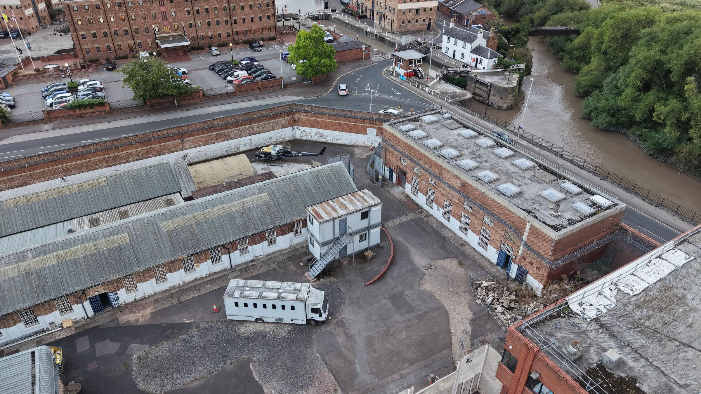
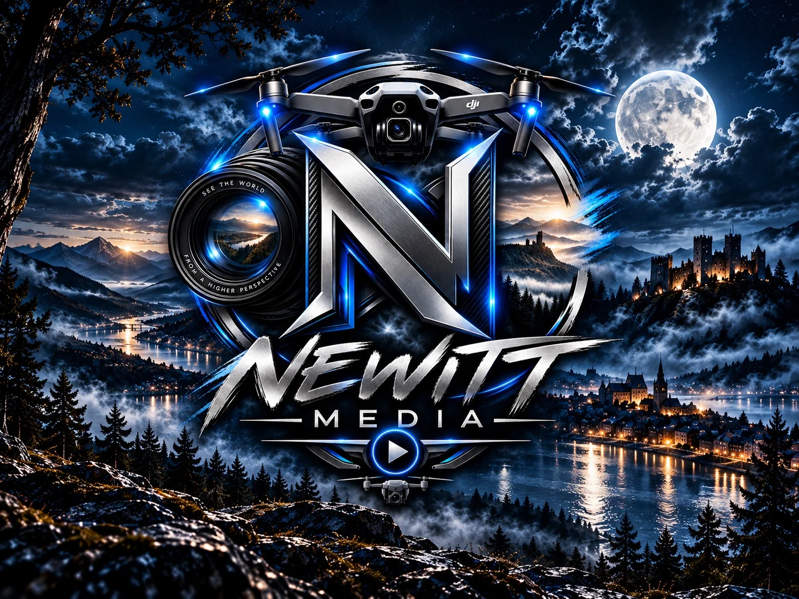
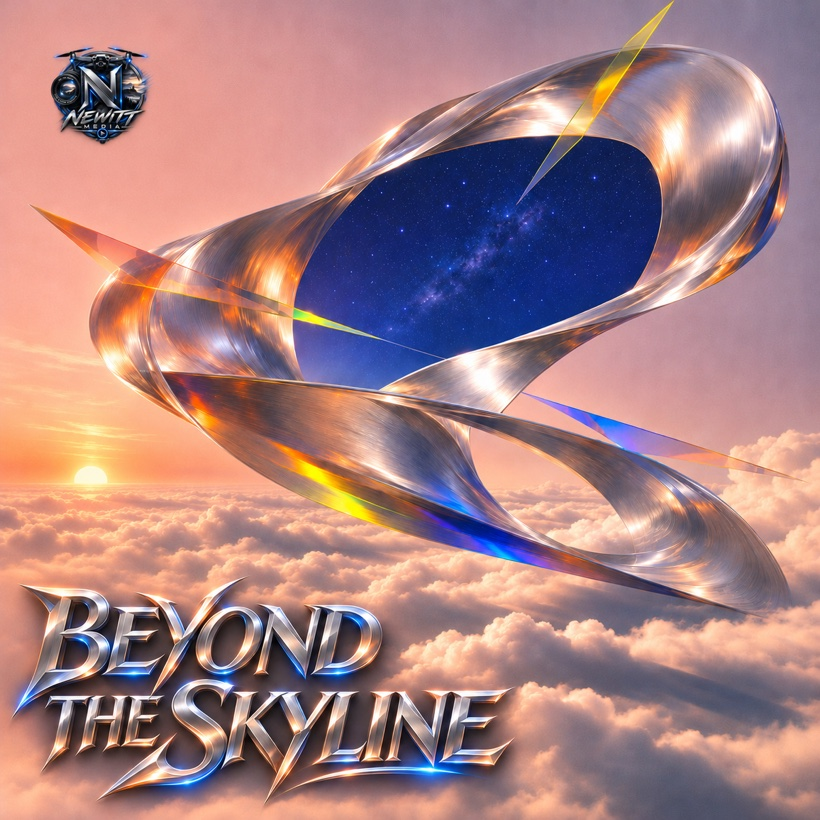

Film · Photography · Original Music
NEWITT MEDIA
From above. After dark. And everything in between.

Featured production
Gloucester
Prison
Four aerial perspectives on the prison and the streets around it.
See the aerial project
Meet Ian Newitt
I’m Ian Newitt, the person behind NEWITT MEDIA. I use drones and photography to show places from angles you don’t normally get to see. With Newitt’s Paranormal Adventures, I explore historic locations after dark and share what it’s like to be there. I also make original music, including Beyond The Skyline, to bring some of that atmosphere into my films.
Films & Original Soundtracks
Aerial films, paranormal investigations and the music I make to accompany them.
